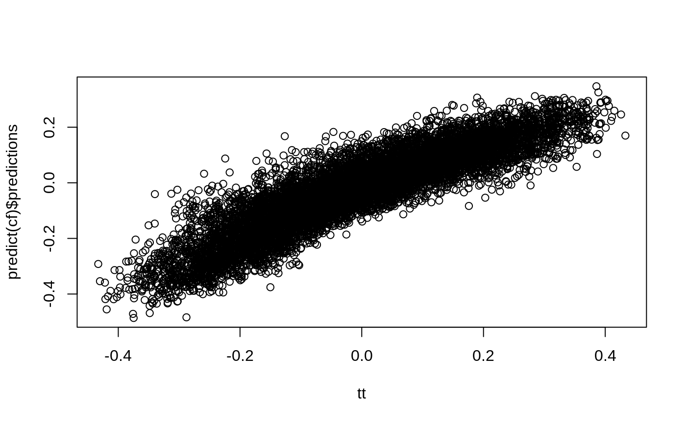
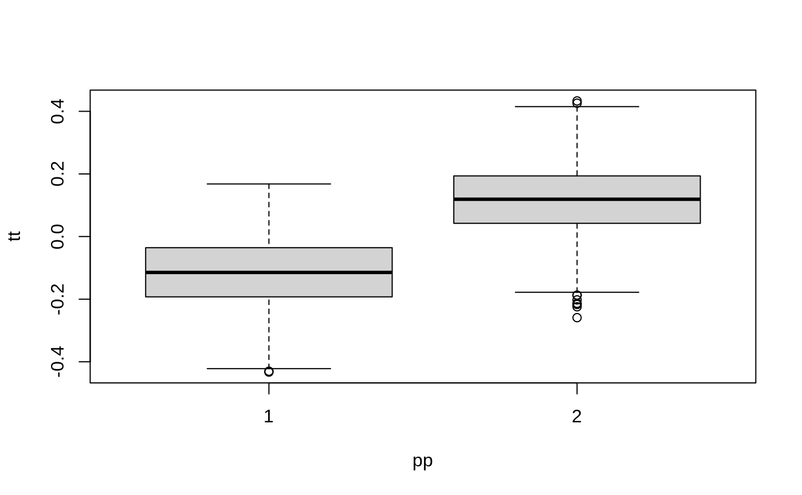
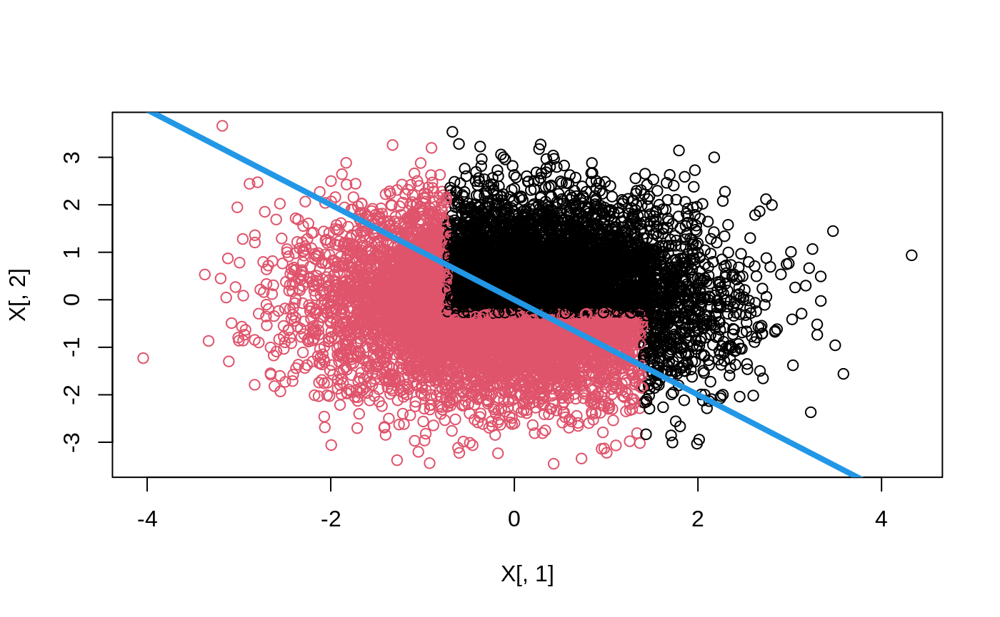
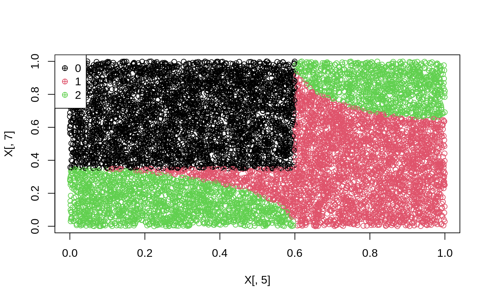
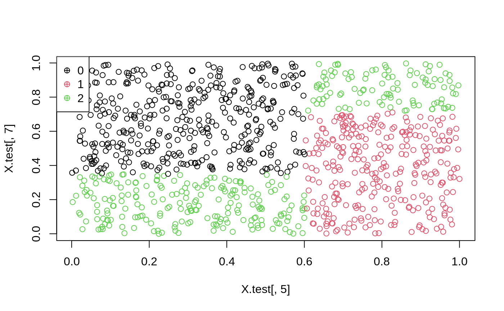

This document provides a short introduction to the policytree package, with examples from Zhou, Athey and Wager (2018), and Athey and Wager (2021). The last section contains details on the runtime of policy_tree.
n <- 10000 p <- 10 X <- matrix(rnorm(n * p), n, p) ee <- 1 / (1 + exp(X[, 3])) tt <- 1 / (1 + exp((X[, 1] + X[, 2]) / 2)) - 0.5 W <- rbinom(n, 1, ee) Y <- X[, 3] + W * tt + rnorm(n) cf <- causal_forest(X, Y, W) plot(tt, predict(cf)$predictions)

dr <- double_robust_scores(cf) tree <- policy_tree(X, dr, 2) tree #> policy_tree object #> Tree depth: 2 #> Actions: 1: control 2: treated #> Variable splits: #> (1) split_variable: X2 split_value: -0.287989 #> (2) split_variable: X1 split_value: 1.40486 #> (4) * action: 2 #> (5) * action: 1 #> (3) split_variable: X1 split_value: -0.729217 #> (6) * action: 2 #> (7) * action: 1 pp <- predict(tree, X) boxplot(tt ~ pp)

plot(tree)

The following example is from the 3-action DGP from section 6.4.1 in Zhou, Athey and Wager (2018)
n <- 10000 p <- 10 data <- gen_data_mapl(n, p) head(data.frame(data)[1:6]) #> action Y X.1 X.2 X.3 X.4 #> 1 1 2.6284326 0.67222112 0.1911761 0.8306201 0.04823820 #> 2 2 -0.4104820 0.06268746 0.5293111 0.9005144 0.17141539 #> 3 0 2.5760171 0.96091759 0.2426804 0.8510604 0.81590389 #> 4 1 6.4251811 0.28812068 0.5097512 0.2848444 0.26683712 #> 5 1 -0.7418237 0.24016147 0.9975204 0.5635440 0.29509120 #> 6 2 -0.1215063 0.12274854 0.8569016 0.4839027 0.09840055 X <- data$X Y <- data$Y W <- as.factor(data$action) multi.forest <- multi_arm_causal_forest(X, Y, W) # tau.hats: head(predict(multi.forest)$predictions[,,]) #> 1 - 0 2 - 0 #> [1,] -0.9276891 -2.1225131 #> [2,] 0.1134661 -0.4008315 #> [3,] 1.5934793 2.5233362 #> [4,] 1.2891367 1.7283063 #> [5,] -0.8107706 -1.8774527 #> [6,] -0.8944159 -1.9862733 # Each region with optimal action region.pp <- data$region + 1 plot(X[, 5], X[, 7], col = region.pp) leg <- sort(unique(region.pp)) legend("topleft", legend = leg - 1, col = leg, pch = 10)

Cross-fitted Augmented Inverse Propensity Weighted Learning (CAIPWL) with the optimal depth 2 tree
Gamma.matrix <- double_robust_scores(multi.forest) head(Gamma.matrix) #> 0 1 2 #> [1,] 3.0736228 2.955238 0.9511097 #> [2,] 2.0894077 2.202874 -7.6580111 #> [3,] 7.9397725 1.641079 2.5709358 #> [4,] 0.3621434 11.463961 2.0904497 #> [5,] 2.9600271 -2.878761 1.0825743 #> [6,] 2.7837680 1.889352 -3.7782404 train <- sample(1:n, 9000) opt.tree <- policy_tree(X[train, ], Gamma.matrix[train, ], depth = 2) opt.tree #> policy_tree object #> Tree depth: 2 #> Actions: 1: 0 2: 1 3: 2 #> Variable splits: #> (1) split_variable: X5 split_value: 0.601445 #> (2) split_variable: X7 split_value: 0.35004 #> (4) * action: 3 #> (5) * action: 1 #> (3) split_variable: X7 split_value: 0.713839 #> (6) * action: 2 #> (7) * action: 3 plot(opt.tree)
Predict treatment on held out data
X.test <- X[-train, ] pp <- predict(opt.tree, X.test) head(pp) #> [1] 2 3 1 1 2 2 plot(X.test[, 5], X.test[, 7], col = pp) leg <- sort(unique(pp)) legend("topleft", legend = leg - 1, col = leg, pch = 10)

The following example is from section 5.2 in Wager and Athey (2021).
n <- 500 data <- gen_data_epl(n, type = "continuous") head(data.frame(data))[1:6] #> W Z tau Y X.1 X.2 #> 1 0 1 -0.50000000 3.4662060 -0.13701966 -1.59064506 #> 2 1 1 -0.07788149 0.5532977 -0.84836207 0.84423702 #> 3 0 0 0.17925500 1.4832753 1.02471100 0.33379899 #> 4 0 1 -0.50000000 1.1881457 -0.04921944 -0.85043640 #> 5 1 1 0.09894633 3.1677820 0.32794872 0.86994393 #> 6 0 1 -0.45727715 -0.6397086 -0.79551953 0.08544569 iv.forest <- instrumental_forest(X = data$X, Y = data$Y, W = data$W, Z = data$Z) gamma <- double_robust_scores(iv.forest) head(gamma) #> control treated #> [1,] -2.4074811 2.4074811 #> [2,] -0.9621055 0.9621055 #> [3,] 0.5835709 -0.5835709 #> [4,] -0.7737124 0.7737124 #> [5,] -2.7940823 2.7940823 #> [6,] 4.4812330 -4.4812330
Find the depth-2 tree which solves (2):
train <- sample(1:400) tree <- policy_tree(data$X[train, ], gamma[train, ]) tree #> policy_tree object #> Tree depth: 2 #> Actions: 1: control 2: treated #> Variable splits: #> (1) split_variable: X4 split_value: 0.169516 #> (2) split_variable: X1 split_value: 0.503502 #> (4) * action: 1 #> (5) * action: 2 #> (3) split_variable: X1 split_value: -0.389985 #> (6) * action: 2 #> (7) * action: 1
Evaluate the policy on held out data:
Exact tree search is intended as a way to find shallow (i.e. depth 2 or 3) globally optimal tree-based polices on datasets of “moderate” size. The amortized runtime of the exact tree search is \(O(p^k n^k (log n + d) + pnlog n)\) where \(p\) is the number of features, \(n\) the number of observations, \(d\) the number of treatments, and \(k \geq 1\) the tree depth. Due to the exponents in this expression, exact tree search will not scale to datasets of arbitrary size.
As an example, the runtime of a depth two tree scales quadratically with the number of observations, implying that doubling the number of samples will quadruple the runtime. n refers to the number of distinct observations, substantial speedups can be gained when the features are discrete (with all binary features, the runtime will be ~ linear in n), and it is therefore beneficial to round down/re-encode very dense data to a lower cardinality (the optional parameter split.step emulates this, though rounding/re-encoding allow for finer-grained control).
As a point of reference, the following table presents runtimes for some example problems.
| depth | n (continuous) | features | actions | split.step | time |
|---|---|---|---|---|---|
| 2 | 1000 | 30 | 20 | 1 | 1.5 min |
| 2 | 1000 | 30 | 20 | 10 | 7 sec |
| 2 | 10 000 | 30 | 20 | 1 | 3 hrs |
| 2 | 10 000 | 30 | 20 | 10 | 14 min |
| 2 | 10 000 | 30 | 20 | 1, but round(X, 2)
|
8 min |
| 2 | 100 000 | 30 | 20 | 10 | 50 hrs |
| 2 | 100 000 | 30 | 20 | 1, but round(X, 2)
|
6.3 hrs |
| 2 | 100 000 | 60 | 20 | 1, but round(X, 2)
|
25 hrs |
| 2 | 100 000 | 30 | 3 | 10 | 7.4 hrs |
The previous section demonstrates that it is infeasible to grow globally optimal deep (depth >= 3) trees on very large N. Notice however that with appropriate discretization of continuous covariates, and feature selection, growing depth 2 exact trees is feasible.
We can maintain the depth-2 amortized runtime while growing deeper trees by using a “hybrid” approach: look ahead depth-2 subtrees when forming splits. This heuristic combines the advantages of a fully greedy and fully optimal approach: by looking further ahead we take potential interactions among variables into account, while retaining feasible scaling. This feature is available in hybrid_policy_tree.
An exact depth 3 tree using the dataset above would take almost 10 minutes to complete, compared with the hybrid approach:
system.time(htree <- hybrid_policy_tree(data$X[train, ], gamma[train, ], depth = 3, search.depth = 2)) #> user system elapsed #> 0.247 0.000 0.247 htree #> policy_tree object #> Tree depth: 3 #> Actions: 1: control 2: treated #> Variable splits: #> (1) split_variable: X4 split_value: 0.169516 #> (2) split_variable: X1 split_value: 0.455357 #> (4) split_variable: X6 split_value: 2.38617 #> (6) * action: 1 #> (7) * action: 2 #> (5) split_variable: X5 split_value: -0.44808 #> (8) * action: 1 #> (9) * action: 2 #> (3) split_variable: X3 split_value: -0.0218932 #> (10) split_variable: X3 split_value: -0.708715 #> (12) * action: 2 #> (13) * action: 1 #> (11) split_variable: X1 split_value: -0.418971 #> (14) * action: 2 #> (15) * action: 1